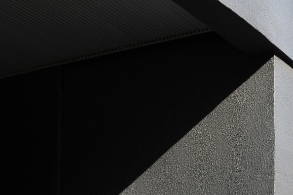
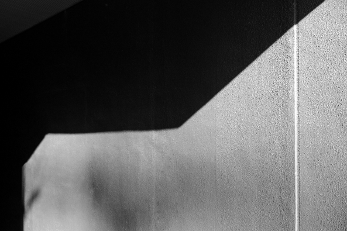
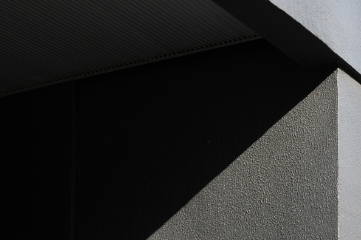
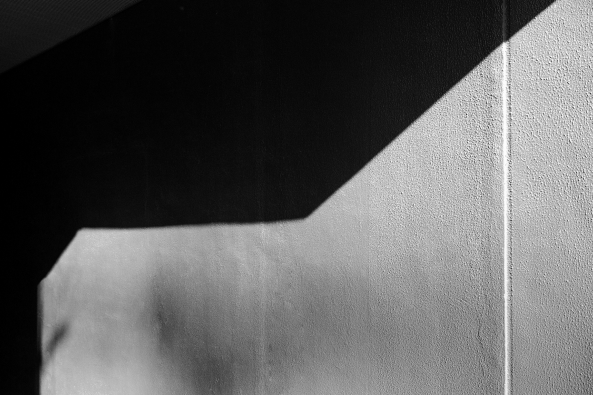

You might be interesting:
Labradorite Deposits Worldwide
10 min | 14.07.2024Labradorite Deposits Worldwide
Where labradorite can be found in the world. Main deposits of the stone ]
introduction
Labradorite has a magmatic origin, forming as magma cools
at a depth of about 3–4 km. Most of the labradorite deposits formed over 1 billion years ago.
Labradorite was first discovered on the Canadian island of Labrador, which is where it gets its
name. Canadian labradorite is renowned for its high quality and attractive color with a vibrant
iridescent effect. However, Canada is not the only country where this stone is mined. Large
deposits are found in the USA, Finland, Norway, Ukraine, Madagascar, and India.
Norwegian labradorite, known as "Blue Pearl," is mined in the Larvik area. It is famous for its
blue-gray hue with a bright pearlescent sheen. Madagascar also has deposits of labradorite in
various colors, including blue, green, and yellow shades. In India, labradorite is mined for
jewelry and decorative elements. Deposits of labradorite are located in the Adirondack Mountains
(New York, USA), the Wichita Mountains (Oklahoma, USA). There are also notable deposits in
Myanmar, Australia, Romania, Italy, Tibet, and Iceland.
Each deposit has its distinct characteristics and individuality, making them rare and
unique.
Labradorite Mining in Ukraine
In Ukraine, the stone has been known since medieval times.
In Kievan Rus, it was called "peacock's eye" or "firebird's eye," and it was also known by the
folk name "miracle stone." It was first used to clad and decorate churches and cathedrals in the
9th-10th centuries. For example, the mineral was chosen for the mosaic on the altar of the
Church of the Tithes, and the tomb of the son of Kyiv Prince Vladimir Monomakh was entirely made
from it.
Over time, labradorite became widely used in cladding work, in the construction of monumental
and religious structures, monuments, and so on. Exports to European countries increased sharply,
with the mineral being ordered in France, Italy, Austria, and Russia.
Ukrainian labradorite is known for its rich colors and attractive opal-like sheen. The most
famous deposit in Ukraine is near the village of Golovino in the Zhytomyr region. It was
explored back in 1894 and is still in operation today. Currently, the company "Golovinski Stone"
is one of the largest suppliers of the stone both in Ukraine and abroad.
The State Gemological Center of Ukraine has registered more than 20 trade names of the stone
from 15 deposits, but the only one that is globally recognized is Volga Blue, which is mined in
Golovino. This is a very beautiful decorative stone, which comes in various shades: blue, azure,
gray, and black with many iridescent effects.
At the Golovino deposit, the stone mined is of the first-class radioactivity level: it can be
used in residential buildings and public places. Due to its unique optical properties,
labradorite is widely used in architecture, interior design, and jewelry making. But more on
this later.
 


